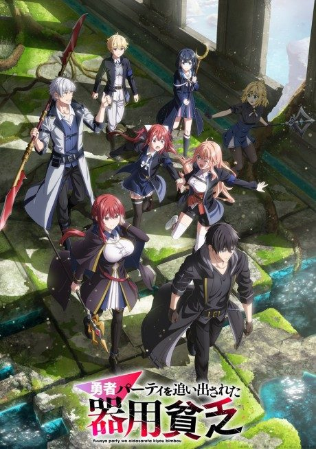
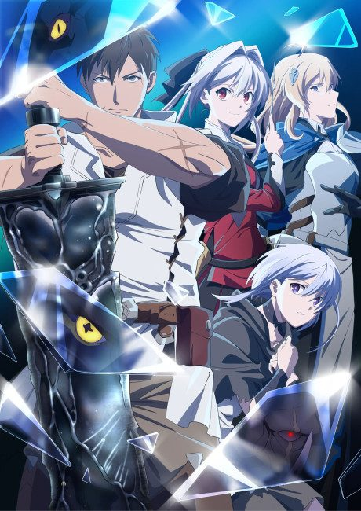

The Unwanted Undead Adventurer
望まぬ不死の冒険者
Rentt, a mediocre adventurer, is eaten by a dragon and wakes up as a skeleton.
After the anime, read the light novel from Volume 4.
7.4AniList score
—Animeter, no votes yet
12episodes
Rate it or report where you stopped
Anime finished. Where does the story go next?
Start at Volume4
The anime covers volumes 1 to 3 of the light novel (episodes 1-5, 6-9, 10-12), so start at volume 4.
13ongoing
Season 1Start reading here
More like The Unwanted Undead Adventurer

Unclear6.7 Manga Ch. 1118.0
Manga Ch. 1118.0
 Manga Ch. 1997.8
Manga Ch. 1997.8
 Film8.2
Film8.2
 Manga Ch. 577.4
Manga Ch. 577.4
 Manga Ch. 2707.9
Manga Ch. 2707.9
 Unclear7.0
Unclear7.0
 Done7.3
Done7.3
 Original6.9
Original6.9
 VN6.9
VN6.9

Unclear6.8 Manga Vol. 116.5
Manga Vol. 116.5